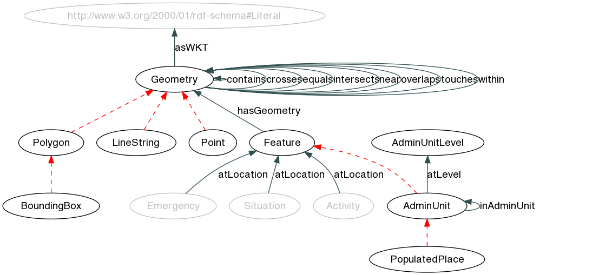
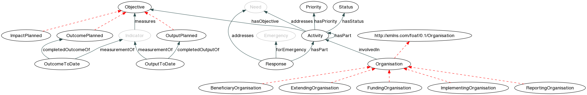
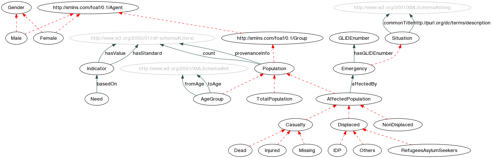
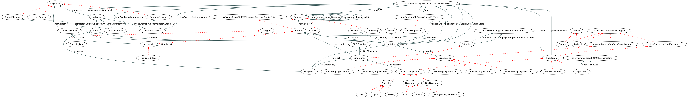

RDF is based on statements of the form subject - predicate - object. Subject and object are illustrated as ellipses, the prediacte – or property – connects them and points from subject to object.
RDF is based on statements of the form subject - predicate - object. Subject and object are illustrated as ellipses, the prediacte – or property – connects them and points from subject to object.
The XML Namespace URI that should be used by implementations of this specification is: http://hxl.humanitarianresponse.info/.
The preferred prefix for the vocabulary is hxl.
Draft specification of the Humanitarian eXchange Language (HXL) standard. This vocabulary specification is currently under development and may change at any time without notice. Note that the standard is not complete yet; there is some future work that remains to be done.
This version of the standard is also open for comments. Please use this Google Doc to add comments to the standard.
The purpose of HXL is to facilitate data exchange within the humanitarian domain. It provides a core domain model that has been created bottom-up by inspecting a broad range of systems in use with different humanitarian organisations. As needs vary widely across organisations in this domain, this vocabulary does not intend to be complete; in fact, it is the smallest common denominator. Any organisations that wish to publish full exports of their data can do so by extending this domain model with application- or organisation-specific models that reflect their internal data models (which may already be formalised in an XML schema or database schema).
The Humanitarian eXchange Language is defined as a set of classes and properties, using the Resource Description Framework (RDF) as underlying technology. This enables HXL to publish humanitarian data as part of the Linked Open Data cloud. We recommend Tim Berners-Lee's TED Talk as a quick introduction to Linked Data and RDF, and the Linked Data book by Tom Heath and Chris Bizer as a more in-depth, technical primer to the topic.
The following series of figures illustrates the basics of RDF and Linked Data that are required to understand this document.
RDF is based on statements of the form subject - predicate - object. Subject and object are illustrated as ellipses, the prediacte – or property – connects them and points from subject to object.
 URLs act as unique identifiers for subjects, properties and objects, as shown here. This way, more information about these can be found out by visiting the URLs. In case of the property, it should return its definition – again in RDF.
URLs act as unique identifiers for subjects, properties and objects, as shown here. This way, more information about these can be found out by visiting the URLs. In case of the property, it should return its definition – again in RDF.
 Namespace declarations can be used to make the URLs more compact. In this standard, we only show the namespace prefix if the class or property has been defined in an external standard. Moreover, the object of a statement (or triple) can also be a literal, such as a string or a number. Literals are visualized as boxes.
Namespace declarations can be used to make the URLs more compact. In this standard, we only show the namespace prefix if the class or property has been defined in an external standard. Moreover, the object of a statement (or triple) can also be a literal, such as a string or a number. Literals are visualized as boxes.
 Any subjects and (non-literal) objects should be typed. The classes defined in this standard declare the types that can be used for this purpose.
Any subjects and (non-literal) objects should be typed. The classes defined in this standard declare the types that can be used for this purpose.
 The definitions of these classes are based on subclass hierarchies, indicated by a dotted red line in the figure. Emergency is a subclass of Situation, for example. Subclasses inherit from their superclasses, most importantly in terms of the domain and range of properties.
The definitions of these classes are based on subclass hierarchies, indicated by a dotted red line in the figure. Emergency is a subclass of Situation, for example. Subclasses inherit from their superclasses, most importantly in terms of the domain and range of properties.
 The domain and range define the types of things between which a property can be used. Consider the property hasObjective, whose domain is defined as Humanitarian Activity. This states that whenever we see a statement using hasObjective as property, we can infer that the subject of this triple is a Humanitarian Activity. Likewise, its range is defined as Objective, so that we can infer that the object in any statement using hasObjective is an Objective. In the graphs shown in this standard, the property arrows point from domain to range (i.e., from kinds of subjects to kinds of objects).
The domain and range define the types of things between which a property can be used. Consider the property hasObjective, whose domain is defined as Humanitarian Activity. This states that whenever we see a statement using hasObjective as property, we can infer that the subject of this triple is a Humanitarian Activity. Likewise, its range is defined as Objective, so that we can infer that the object in any statement using hasObjective is an Objective. In the graphs shown in this standard, the property arrows point from domain to range (i.e., from kinds of subjects to kinds of objects).
An alphabetical index of all terms from the HXL vocabulary, by class and by property, is given below for quick reference. Click the terms for a more detailed description.
Classes | Humanitarian Activity | Administrative Unit | Administrative Unit Level | Affected Population | Age Group | Beneficiary Organisation | Bounding Box | Casualty | Dead | Displaced | Emergency | Extending Organisation | Feature | Female | Funding Organisation | GLIDE number | Gender | Geometry | Internally Displaced Person | Impact planned | Implementing Organisation | Indicator | Injured | Line String | Male | Missing | Need | Non-Displaced | Objective | Organisation | Internally Displaced Person | Outcome planned | Outcome to date | Output planned | Output to date | Point | Polygon | Populated Place | Population | Priority | Refugees and Asylum Seekers | Reporting Organisation | Reporting Period | Response | Situation | Status | Total Population | http://purl.org/dc/terms/PeriodOfTime | http://xmlns.com/foaf/0.1/Agent | http://xmlns.com/foaf/0.1/Group | http://xmlns.com/foaf/0.1/Organisation |
Properties | actual end | actual start | addresses | affected by | as WKT | at level | atLocation | based on | common title | completed outcome of | completed output of | contains | count | crosses | end | equals | for emergency | from age | has GLIDE number | has geometry | has objective | has part | has priority | has standard | has status | has value | in administrative unit | intersects | involved in | measurement of | measures | near | overlaps | planned end | planned start | provenance Information | start | to age | touches | within | http://purl.org/dc/terms/date | http://purl.org/dc/terms/description |
The cross-reference is organized into thematic sections. Each section is illustrated by a graph of the respective classes and properties. The ellipses in the graph represent classes, whereas the arrows represent properties. Dashed lines indicate a subclass relationship (e.g. Camp is a subclass of Site). Solid lines are labeled with the property that connects these two classes. Grey ellipses indicate adjacent classes that are defined in a different section.
Jump directly to the different sections: | Date/Time Section | Geolocation Section | Response Section | Situation Section |
This section of the vocabulary defines the date/time standard. The draft HXL date/time standard contains detailed description of how to use the classes and properties.
Alphabetical index of all classes and properties in the Date/Time Section:
Classes | Reporting Period | http://purl.org/dc/terms/PeriodOfTime |
Properties | actual end | actual start | end | planned end | planned start | start | http://purl.org/dc/terms/date |
Extended graph visualization of the Date/Time Section, including adjacent classes defined in a different section (in grey).

[click to enlarge]
The time frame that a report covers.
Term origin: Sigmah DB.
| Identifier: | ReportingPeriod |
|---|---|
| Subclass of: | http://purl.org/dc/terms/PeriodOfTime |
| Identifier: | http://purl.org/dc/terms/PeriodOfTime |
|---|---|
| Subclasses: | Reporting Period | |
| Domain of: | end | start | |
Specifies the actual end of an activity.
| Identifier: | actualEnd |
|---|---|
| Domain: | Humanitarian Activity |
| Range: | http://www.w3.org/2000/01/rdf-schema#Literal |
Specifies the actual start of an activity.
| Identifier: | actualStart |
|---|---|
| Domain: | Humanitarian Activity |
| Range: | http://www.w3.org/2000/01/rdf-schema#Literal |
Specifies the end of activities, projects, etc.
| Identifier: | end |
|---|---|
| Domain: | http://purl.org/dc/terms/PeriodOfTime |
| Range: | http://www.w3.org/2000/01/rdf-schema#Literal |
Specifies the planned end of an activity.
| Identifier: | plannedEnd |
|---|---|
| Domain: | Humanitarian Activity |
| Range: | http://www.w3.org/2000/01/rdf-schema#Literal |
Specifies the planned start of an activity.
| Identifier: | plannedStart |
|---|---|
| Domain: | Humanitarian Activity |
| Range: | http://www.w3.org/2000/01/rdf-schema#Literal |
Specifies the start of time periods.
| Identifier: | start |
|---|---|
| Domain: | http://purl.org/dc/terms/PeriodOfTime |
| Range: | http://www.w3.org/2000/01/rdf-schema#Literal |
Generic property for date/time stamps at arbitrary granularity.
| Identifier: | http://purl.org/dc/terms/date |
|---|---|
| Domain: | Outcome to date Output to date |
| Range: | http://www.w3.org/2000/01/rdf-schema#Literal |
This section of the vocabulary defines the geolocation standard. The draft HXL geolocation standard contains detailed description of how to use the classes and properties.
Alphabetical index of all classes and properties in the Geolocation Section:
Classes | Administrative Unit | Administrative Unit Level | Bounding Box | Feature | Geometry | Line String | Point | Polygon | Populated Place |
Properties | as WKT | at level | atLocation | contains | crosses | equals | has geometry | in administrative unit | intersects | near | overlaps | touches | within |
Extended graph visualization of the Geolocation Section, including adjacent classes defined in a different section (in grey).
[click to enlarge]
Administrative units can include coutries, regions, cities, etc. The hierarchy of administrative units can vary from country to country.
| Identifier: | AdminUnit |
|---|---|
| Subclass of: | Feature |
| Subclasses: | Populated Place | |
| Domain of: | at level | in administrative unit | |
| Range of: | in administrative unit | |
The specific administrative unit levels can vary from country to country. Administrative Unit Level 0 is a country – in this case, hxl:Country should be used.
| Identifier: | AdminUnitLevel |
|---|---|
| Range of: | at level | |
A BoundingBox is a Polygon defined by 1 exterior boundary and 0 interior boundaries. The exterior boundary consists of 4 points arranged as a rectangle.
| Identifier: | BoundingBox |
|---|---|
| Subclass of: | Polygon |
Any real-word phenomenon with spatial extent, i.e. size, shape, or position.
| Identifier: | Feature |
|---|---|
| Subclass of: | http://www.w3.org/2003/01/geo/wgs84_pos#SpatialThing |
| Subclasses: | Administrative Unit | |
| Domain of: | has geometry | |
| Range of: | atLocation | |
Abstract root class of the geometry. This class should not be instantiated; use any of the subclasses when creating actual geometries.
| Identifier: | Geometry |
|---|---|
| Subclasses: | Line String | Point | Polygon | |
| Domain of: | as WKT | contains | crosses | equals | intersects | near | overlaps | touches | within | |
| Range of: | contains | crosses | equals | has geometry | intersects | near | overlaps | touches | within | |
A LineString is a Curve with linear interpolation between Points. Each consecutive pair of Points defines a Line segment.
| Identifier: | LineString |
|---|---|
| Subclass of: | Geometry |
A Point is a 0-dimensional geometric object and represents a single location in a two- or three-dimensional coordinate space.
| Identifier: | Point |
|---|---|
| Subclass of: | Geometry |
A Polygon is a planar Surface defined by 1 exterior boundary and 0 or more interior boundaries. Each interior boundary defines a hole in the Polygon.
| Identifier: | Polygon |
|---|---|
| Subclass of: | Geometry |
| Subclasses: | Bounding Box | |
Lowest-level administrative unit, such as a town or settlement.
| Identifier: | PopulatedPlace |
|---|---|
| Subclass of: | Administrative Unit |
A geometry serialised as WKT. Note that the WKT serialisation contains the spatial reference system (SRS), as specified in the OGC Simple Feature standard. If no SRS is given, HXL uses WGS 84 as the standard SRS.
| Identifier: | asWKT |
|---|---|
| Domain: | Geometry |
| Range: | http://www.w3.org/2000/01/rdf-schema#Literal |
Specifies the level for an administrative unit.
| Identifier: | atLevel |
|---|---|
| Domain: | Administrative Unit |
| Range: | Administrative Unit Level |
| Inverse property: | levelOf |
Specififes the location for things like emergencies, projects, or camps.
| Identifier: | atLocation |
|---|---|
| Domain: | Emergency Situation Humanitarian Activity |
| Range: | Feature |
| Inverse property: | locationOf |
Topological relation. States that one geometry contains another one.
| Identifier: | contains |
|---|---|
| Domain: | Geometry |
| Range: | Geometry |
Topological relation. States that one geometry crosses another one.
| Identifier: | crosses |
|---|---|
| Domain: | Geometry |
| Range: | Geometry |
Topological relation. States that two geometries are equal.
| Identifier: | equals |
|---|---|
| Domain: | Geometry |
| Range: | Geometry |
Relates a feature to its geometry.
| Identifier: | hasGeometry |
|---|---|
| Domain: | Feature |
| Range: | Geometry |
| Inverse property: | isGeometryOf |
Specifies direct containment between two administrative units. This property should only be used between administrative units that directly contain each other, i.e., when the administrative unit level of the containing unit is the level of the contained unit plus 1.
| Identifier: | inAdminUnit |
|---|---|
| Domain: | Administrative Unit |
| Range: | Administrative Unit |
Topological relation. States that one geometry intersects another one.
| Identifier: | intersects |
|---|---|
| Domain: | Geometry |
| Range: | Geometry |
Topological relation. States that one geometry is near another one.
| Identifier: | near |
|---|---|
| Domain: | Geometry |
| Range: | Geometry |
Topological relation. States that one geometry overlaps another one.
| Identifier: | overlaps |
|---|---|
| Domain: | Geometry |
| Range: | Geometry |
Topological relation. States that one geometry touches another one.
| Identifier: | touches |
|---|---|
| Domain: | Geometry |
| Range: | Geometry |
Topological relation. States that one geometry is within another one.
| Identifier: | within |
|---|---|
| Domain: | Geometry |
| Range: | Geometry |
This section of the vocabulary defines the standards for response activities.
Alphabetical index of all classes and properties in the Response Section:
Classes | Humanitarian Activity | Beneficiary Organisation | Extending Organisation | Funding Organisation | Impact planned | Implementing Organisation | Objective | Organisation | Outcome planned | Outcome to date | Output planned | Output to date | Priority | Reporting Organisation | Response | Status | http://xmlns.com/foaf/0.1/Organisation |
Properties | addresses | completed outcome of | completed output of | for emergency | has objective | has part | has priority | has status | involved in | measurement of | measures |
Extended graph visualization of the Response Section, including adjacent classes defined in a different section (in grey).
[click to enlarge]
An Activity generally addresses some kind of need given in a Humanitarian Situation. Synonyms: Project, intervention.
Term origin: IATI, CAP OPS, Pakistan SRF, Sahana Project, Sigmah DB
| Identifier: | Activity |
|---|---|
| Domain of: | actual end | actual start | addresses | atLocation | has objective | has part | has priority | has status | planned end | planned start | |
| Range of: | has part | involved in | |
An organisation receiving funding for this activity and ultimately carrying it out.
Term origin: IATI.
| Identifier: | BeneficiaryOrganisation |
|---|---|
| Subclass of: | Organisation |
The subunit of the funding country or organisation, financing the activity from its own budget (e.g. a government agency or department).
Term origin: IATI.
| Identifier: | ExtendingOrganisation |
|---|---|
| Subclass of: | Organisation |
An organisation providing money or in-kind funding for an activity.
Term origin: IATI.
| Identifier: | FundingOrganisation |
|---|---|
| Subclass of: | Organisation |
The positive and negative, primary and secondary long-term effects produced by a humanitarian action, directly or indirectly. Example: reduction in child mortality. See CAP Guidelines 2012.
| Identifier: | ImpactPlanned |
|---|---|
| Subclass of: | Objective |
An external organisation / partner implenting (parts) of a project for an agency.
Term origin: IATI, CAP OPS, Pakistan SRF, HPM Ethiopia (Partner), Sigmah DB (Partner).
| Identifier: | ImplementingOrganisation |
|---|---|
| Subclass of: | Organisation |
An objective states part of your humanitarian strategy in terms of the expected outputs, outcomes and impact, supported by a convincing description of how you will attain them in the face of limited resources, imperfect access and other impediments. Every objective should be SMART: specific, measurable (when matched with relevant indicators), achievable, relevant and time-bound. (CAP 2012 Guidelines)
Term origin: Sahana Project, CERF
| Identifier: | Objective |
|---|---|
| Subclasses: | Impact planned | Outcome planned | Output planned | |
| Range of: | has objective | measures | |
A humanitarian organisation.
Term origin: IATI, CAP OPS, Pakistan SRF, EIMS Report, Shelter Cluster, Sigmah DB.
| Identifier: | Organisation |
|---|---|
| Subclass of: | http://xmlns.com/foaf/0.1/Organisation |
| Subclasses: | Beneficiary Organisation | Extending Organisation | Funding Organisation | Implementing Organisation | Reporting Organisation | |
| Domain of: | involved in | |
Planned outcome. An outcome is the short-term or medium-term effect of a humanitarian action on the affected population. Outcomes often are the results of multiple outputs; each outcome in your planning may therefore correspond to more than one output. Example: increase in household consumption of potable water. See CAP Guidelines 2012.
| Identifier: | OutcomePlanned |
|---|---|
| Subclass of: | Objective |
| Range of: | completed outcome of | |
The state of this outcome at a certain point in time. An outcome is the short-term or medium-term effect of a humanitarian action on the affected population. Outcomes often are the results of multiple outputs; each outcome in your planning may therefore correspond to more than one output. Example: increase in household consumption of potable water. See CAP Guidelines 2012.
| Identifier: | OutcomeToDate |
|---|---|
| Domain of: | completed outcome of | measurement of | http://purl.org/dc/terms/date | |
Planned output. The outputs are the products, goods or services that are the direct results of a humanitarian action. Example: NFI kits in the hands of affected households; functioning water points; latrines; distributed food rations; therapeutic feeding treatments. See CAP Guidelines 2012.
| Identifier: | OutputPlanned |
|---|---|
| Subclass of: | Objective |
| Range of: | completed output of | |
The state of this outcome at a certain point in time. The outputs are the products, goods or services that are the direct results of a humanitarian action. Example: NFI kits in the hands of affected households; functioning water points; latrines; distributed food rations; therapeutic feeding treatments. See CAP Guidelines 2012. See CAP Guidelines 2012.
| Identifier: | OutputToDate |
|---|---|
| Domain of: | completed output of | measurement of | http://purl.org/dc/terms/date | |
The priority for a project or activity. Individuals of this class should be created whenever a fixed scale for priorities is in use.
Term origin: CAP OPS, UNHCR Camp DB, Sahana Project, MIRA, HPM Ethiopia.
| Identifier: | Priority |
|---|---|
| Range of: | has priority | |
The reporting organization is not necessarily involved in the aid activity itself, though in practice it often will be a donor or appealing agency.
Term origin: IATI.
| Identifier: | ReportingOrganisation |
|---|---|
| Subclass of: | Organisation |
Generic term for the collection of all activities that address the needs araising from an emergency.
Term origin: ACAPS DSS, ACAPS DSS, MIRA, EDXL, CCDI (Humanitarian Response), CERF (Humanitarian Response)
| Identifier: | Response |
|---|---|
| Domain of: | addresses | for emergency | has part | |
Status of an activity. Can be instantiated by organisations that use standardised status codes.
Term origin: Sahana Project CCDI, CERF, EDXL.
| Identifier: | Status |
|---|---|
| Range of: | has status | |
| Identifier: | http://xmlns.com/foaf/0.1/Organisation |
|---|---|
| Subclass of: | http://xmlns.com/foaf/0.1/Agent |
| Subclasses: | Organisation | |
States that a certain activity addresses a need.
| Identifier: | addresses |
|---|---|
| Domain: | Response Humanitarian Activity |
| Range: | Need |
| Inverse property: | addressedBy |
Relates the outcome to date to the outcome planned.
| Identifier: | completedOutcomeOf |
|---|---|
| Domain: | Outcome to date |
| Range: | Outcome planned |
Relates the output to date to the output planned.
| Identifier: | completedOutputOf |
|---|---|
| Domain: | Output to date |
| Range: | Output planned |
States that a certain activity has been initiated for an emergency.
| Identifier: | forEmergency |
|---|---|
| Domain: | Response |
| Range: | Emergency |
| Inverse property: | emergencyOf |
Defines the objectives for an activity or project.
| Identifier: | hasObjective |
|---|---|
| Domain: | Humanitarian Activity |
| Range: | Objective |
| Inverse property: | isObjectiveOf |
Specifies part-whole relationships; e.g., a specific project can have sub-projects or specific activities.
| Identifier: | hasPart |
|---|---|
| Domain: | Response Humanitarian Activity |
| Range: | Humanitarian Activity |
| Inverse property: | partOf |
Defines the priority for an activity or project.
| Identifier: | hasPriority |
|---|---|
| Domain: | Humanitarian Activity |
| Range: | Priority |
| Inverse property: | isPriorityOf |
Sets the current status for an activity.
| Identifier: | hasStatus |
|---|---|
| Domain: | Humanitarian Activity |
| Range: | Status |
| Inverse property: | statusOf |
Indicates an organisation's involvement in an activity.
| Identifier: | involvedIn |
|---|---|
| Domain: | Organisation |
| Range: | Humanitarian Activity |
| Inverse property: | involvedOrganisation |
Defines what impact an output / outcome to date measures.
| Identifier: | measurementOf |
|---|---|
| Domain: | Output to date Outcome to date |
| Range: | Indicator |
Specififes the need or objective that a certain indicator addresses or measures. Eventually create second property for objectives?
| Identifier: | measures |
|---|---|
| Domain: | Indicator |
| Range: | Objective |
| Inverse property: | measuredBy |
This section of the vocabulary defines the standards for situations and emergencies.
Alphabetical index of all classes and properties in the Situation Section:
Classes | Affected Population | Age Group | Casualty | Dead | Displaced | Emergency | Female | GLIDE number | Gender | Internally Displaced Person | Indicator | Injured | Male | Missing | Need | Non-Displaced | Internally Displaced Person | Population | Refugees and Asylum Seekers | Situation | Total Population | http://xmlns.com/foaf/0.1/Agent | http://xmlns.com/foaf/0.1/Group |
Properties | affected by | based on | common title | count | from age | has GLIDE number | has standard | has value | provenance Information | to age | http://purl.org/dc/terms/description |
Extended graph visualization of the Situation Section, including adjacent classes defined in a different section (in grey).
[click to enlarge]
The population affected by an emergency.
Term origin: Humanitarian Profile (Affected);
| Identifier: | AffectedPopulation |
|---|---|
| Subclass of: | Population |
| Subclasses: | Casualty | Displaced | Non-Displaced | |
| Domain of: | affected by | |
Generic class for age groups; instances should be created for actual age groups (e.g. children under 5).
| Identifier: | AgeGroup |
|---|---|
| Subclass of: | Population |
| Domain of: | from age | to age | |
E.g. injured or dead.
Term origin: ACAPS DSS, Humanitarian Profile.
| Identifier: | Casualty |
|---|---|
| Subclass of: | Affected Population |
| Subclasses: | Dead | Injured | Missing | |
A (reported) death.
Term origin: ACAPS DSS, HPM Ethiopia, Shelter Cluster, Humanitarian Profile (Dead).
| Identifier: | Dead |
|---|---|
| Subclass of: | Casualty |
Refers to internally displaced persons, refugees, and others of concern.
Term origin: Humanitarian Profile, ACAPS DSS (Displacement)
| Identifier: | Displaced |
|---|---|
| Subclass of: | Affected Population |
| Subclasses: | Internally Displaced Person | Internally Displaced Person | Refugees and Asylum Seekers | |
Any situation in which ... life or well-being ... will be threatened unless immediate and appropriate action is taken, and which demands an extraordinary response and exceptional measures” (UNHCR Handbook for Emergencies)
A sudden crisis situation or event requiring immediate action (WART)
Any situation in which there is an exceptional and widespread threat to life, health or basic subsistence, that is beyond the coping capacity of individuals and the community” (Oxfam GB Emergency Response Manual).
Where and when a disaster provokes an immediate, exceptional and widespread threat to life, health or basic subsistence, which overwhelms the coping capacity of individual and community, implying need of external assistance” (source: ACFIN Emergency module)
Term origin: CAP OPS, Pakistan SRF, ACAPS DSS, CERF, MIRA.| Identifier: | Emergency |
|---|---|
| Subclass of: | Situation |
| Domain of: | atLocation | has GLIDE number | |
| Range of: | affected by | for emergency | |
A woman/girl or group of women/girls.
Term origin: CERF, EIMS Report.
| Identifier: | Female |
|---|---|
| Subclass of: | http://xmlns.com/foaf/0.1/Agent |
Globally common Unique ID code for disasters. See about GLIDE.
| Identifier: | GLIDEnumber |
|---|---|
| Range of: | has GLIDE number | |
Class to describe gender-specific issues, either at individual or group level.
Term origin: MIRA, CCDI
| Identifier: | Gender |
|---|---|
| Subclasses: | Female | Male | |
A group of internally displaced persons (IDPs).
Term origin: Humanitarian Profile, CERF, HPM Ethiopia
| Identifier: | IDP |
|---|---|
| Subclass of: | Displaced |
Concrete measurable reference for a concrete need; e.g., 5 litres of clean water per person and day.
Term origin: Pakistan SRF, ACAPS DSS, CCDI, CERF, HPM Ethiopia, Sigmah DB
| Identifier: | Indicator |
|---|---|
| Domain of: | has standard | has value | measures | |
| Range of: | based on | measurement of | |
Injured part of the population.
Term origin: ACAPS DSS, Humanitarian Profile, Shelter Cluster, HERAMS Checklist (Injury)
| Identifier: | Injured |
|---|---|
| Subclass of: | Casualty |
A man/boy or group of men/boys.
Term origin: CERF, EIMS Report.
| Identifier: | Male |
|---|---|
| Subclass of: | http://xmlns.com/foaf/0.1/Agent |
Missing population.
Term origin: Humanitarian Profile.
| Identifier: | Missing |
|---|---|
| Subclass of: | Casualty |
A concrete need, lack, or gap, e.g. a shortage of food. Can be based on the application of relevant norms (usually a minimum requirement or a pre-existing ‘normal’ situation); and an assessment of how the reality differs. Identifying and measuring deficits, either actual or predicted.
Term origin: CAP OPS, ACAPS DSS (also: Humanitarian Need), CCDI (Humanitarian Need), CCDI Shelter Cluster (Gap), HPM Ethiopia (Gap).
| Identifier: | Need |
|---|---|
| Domain of: | based on | |
| Range of: | addresses | |
Refers to the part of the affected population that is not displaced (i.e., host or non-host);.
Term origin: Humanitarian Profile.
| Identifier: | NonDisplaced |
|---|---|
| Subclass of: | Affected Population |
A group of displaced persons that does neither fit the IDP nor Refugees/Asylum Seekers classes.
Term origin: Humanitarian Profile
| Identifier: | Others |
|---|---|
| Subclass of: | Displaced |
Generic class for any kind of population (e.g. total, affected, etc.); use the subclasses for the data annotation.
| Identifier: | Population |
|---|---|
| Subclass of: | http://xmlns.com/foaf/0.1/Group |
| Subclasses: | Affected Population | Age Group | Total Population | |
| Domain of: | count | provenance Information | |
A group of refugees and asylum seekers.
Term origin: Humanitarian Profile
| Identifier: | RefugeesAsylumSeekers |
|---|---|
| Subclass of: | Displaced |
Generic situation.
| Identifier: | Situation |
|---|---|
| Subclasses: | Emergency | |
| Domain of: | atLocation | common title | http://purl.org/dc/terms/description | |
Total population for a given administrative unit or geographic area. Instances can be created to make statements about this population.
| Identifier: | TotalPopulation |
|---|---|
| Subclass of: | Population |
| Identifier: | http://xmlns.com/foaf/0.1/Agent |
|---|---|
| Subclasses: | Female | Male | http://xmlns.com/foaf/0.1/Group | http://xmlns.com/foaf/0.1/Organisation | |
| Identifier: | http://xmlns.com/foaf/0.1/Group |
|---|---|
| Subclass of: | http://xmlns.com/foaf/0.1/Agent |
| Subclasses: | Population | |
States that a Population is affacted by an Emergency.
| Identifier: | affectedBy |
|---|---|
| Domain: | Affected Population |
| Range: | Emergency |
| Inverse property: | affects |
Specififes that a gap for a certain need has been identified based on a specific indicator.
| Identifier: | basedOn |
|---|---|
| Domain: | Need |
| Range: | Indicator |
| Inverse property: | indicates |
A commonly use title/name for an emergency.
| Identifier: | commonTitle |
|---|---|
| Domain: | Situation |
| Range: | http://www.w3.org/2001/XMLSchema#string |
Assigns numbers to populations. The range is intentionally not restricted to numeric values, so that rough numbers or estimates are supported.
| Identifier: | count |
|---|---|
| Domain: | Population |
| Range: | http://www.w3.org/2000/01/rdf-schema#Literal |
Specifies the bottom of an age range for an AgeGroup (in years).
| Identifier: | fromAge |
|---|---|
| Domain: | Age Group |
| Range: | http://www.w3.org/2001/XMLSchema#int |
Assigns the GLIDE number to an Emergency.
| Identifier: | hasGLIDEnumber |
|---|---|
| Domain: | Emergency |
| Range: | GLIDE number |
A reference against which the measured value can be compared to know if it requires intervention.
| Identifier: | hasStandard |
|---|---|
| Domain: | Indicator |
| Range: | http://www.w3.org/2000/01/rdf-schema#Literal |
The measured value of this indicator.
| Identifier: | hasValue |
|---|---|
| Domain: | Indicator |
| Range: | http://www.w3.org/2000/01/rdf-schema#Literal |
Free-text description of how the information about the demographic methodology, where the data came from, etc.
| Identifier: | provenanceInfo |
|---|---|
| Domain: | Population |
| Range: | http://www.w3.org/2000/01/rdf-schema#Literal |
Specifies the top of an age range for an AgeGroup (in years).
| Identifier: | toAge |
|---|---|
| Domain: | Age Group |
| Range: | http://www.w3.org/2001/XMLSchema#int |
| Identifier: | http://purl.org/dc/terms/description |
|---|---|
| Domain: | Situation |
| Range: | http://www.w3.org/2001/XMLSchema#string |
The following figure gives an overview of all classes and properties defined by HXL, and how they are connected. The ellipses represent classes, whereas the arrows represent properties: Dashed lines indicate a subclass relationship (e.g. Camp is a subclass of Site). Solid lines are labeled with the property that connects these two classes.
[click to enlarge]
The standard as it exists now is just the beginning. Much work remains to make the standard viable. The list below gives an indication of some of the work that we have identified which needs to be done. Please add your ideas by commenting either in the Google Group or on the Google Doc version of this web page.
We still need to decide under which license this vocabulary should be published.
 This Vocabulary Specification relies on W3C's RDF technology, an open Web standard that can be freely used by anyone.
This Vocabulary Specification relies on W3C's RDF technology, an open Web standard that can be freely used by anyone.
This visual layout and structure of the specification was adapted from the Open Provenance Model Vocabulary edited by Jun Zhao, SIOC Core Ontology Specification edited by Uldis Bojars and John G. Breslin and the Provenance Vocabulary Core Ontology Specification edited by Olaf Hartig and Jun Zhao.
Changes compared to the previous version of the vocabulary: